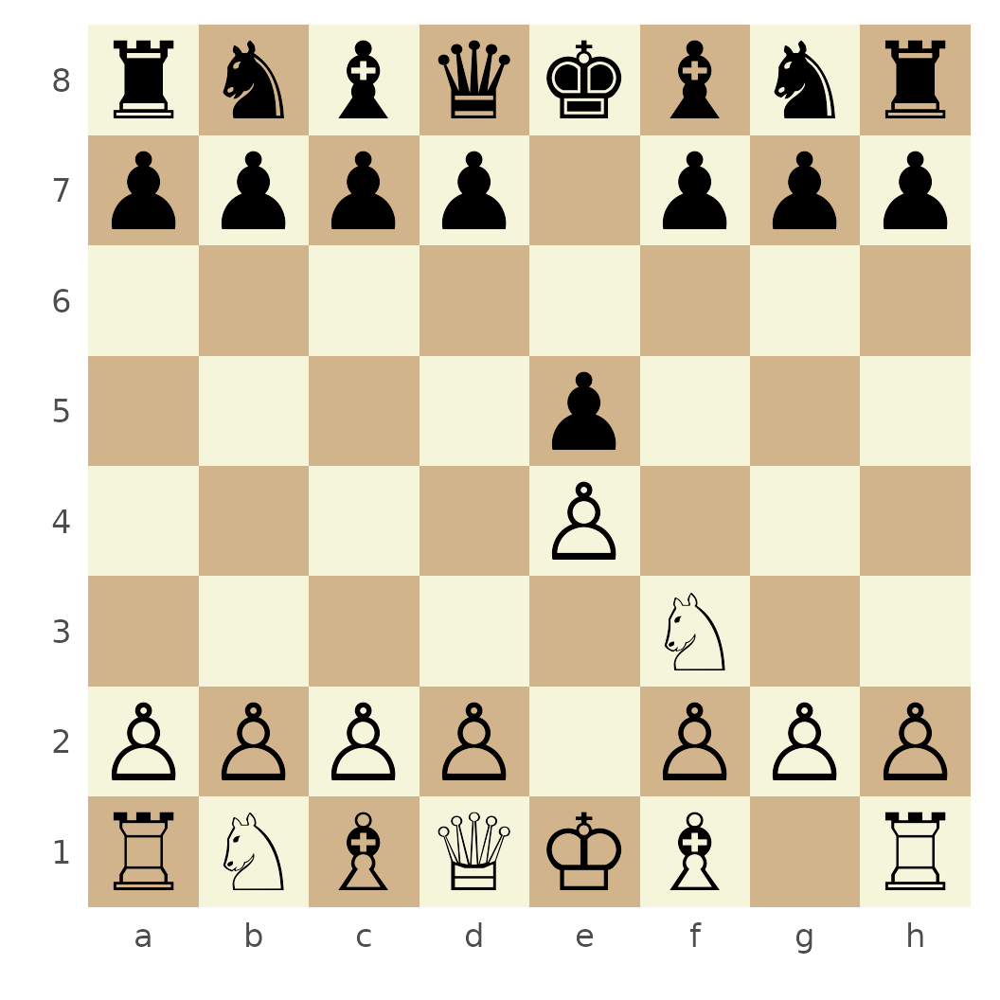
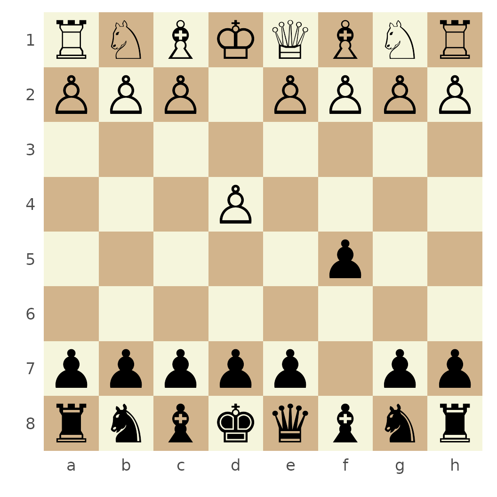

This article updates the complete example that originally lived on
the gh-pages branch. It follows a game from its initial
position through move history, FEN and PGN loading, game-state
validation, and visualization.
Start a game
Create a game in the standard starting position and inspect its legal moves:
game <- Chess$new()
game$moves()
#> [1] "a3" "a4" "b3" "b4" "c3" "c4" "d3" "d4" "e3" "e4" "f3" "f4"
#> [13] "g3" "g4" "h3" "h4" "Na3" "Nc3" "Nf3" "Nh3"
game$moves(verbose = TRUE)
#> # A tibble: 20 × 6
#> color from to flags piece san
#> <chr> <chr> <chr> <chr> <chr> <chr>
#> 1 w a2 a3 n p a3
#> 2 w a2 a4 b p a4
#> 3 w b2 b3 n p b3
#> 4 w b2 b4 b p b4
#> 5 w c2 c3 n p c3
#> 6 w c2 c4 b p c4
#> 7 w d2 d3 n p d3
#> 8 w d2 d4 b p d4
#> 9 w e2 e3 n p e3
#> 10 w e2 e4 b p e4
#> 11 w f2 f3 n p f3
#> 12 w f2 f4 b p f4
#> 13 w g2 g3 n p g3
#> 14 w g2 g4 b p g4
#> 15 w h2 h3 n p h3
#> 16 w h2 h4 b p h4
#> 17 w b1 a3 n n Na3
#> 18 w b1 c3 n n Nc3
#> 19 w g1 f3 n n Nf3
#> 20 w g1 h3 n n Nh3Moves use Standard Algebraic Notation and can be chained:
game$move("e4")$move("e5")$move("Nf3")$move("Nc6")
game$history()
#> [1] "e4" "e5" "Nf3" "Nc6"
game$history(verbose = TRUE)
#> # A tibble: 4 × 7
#> color from to flags piece san number_move
#> <chr> <chr> <chr> <chr> <chr> <chr> <int>
#> 1 w e2 e4 b p e4 1
#> 2 b e7 e5 b p e5 2
#> 3 w g1 f3 n n Nf3 3
#> 4 b b8 c6 n n Nc6 4Inspect the current position and active side:
game$turn()
#> [1] "w"
game$fen()
#> [1] "r1bqkbnr/pppp1ppp/2n5/4p3/4P3/5N2/PPPP1PPP/RNBQKB1R w KQkq - 2 3"
game$get("e4")
#> $type
#> [1] "p"
#>
#> $color
#> [1] "w"
game$square_color("h1")
#> [1] "light"Undo the latest move or print the board in the console:
game$undo()
#> $color
#> [1] "b"
#>
#> $from
#> [1] "b8"
#>
#> $to
#> [1] "c6"
#>
#> $flags
#> [1] "n"
#>
#> $piece
#> [1] "n"
#>
#> $san
#> [1] "Nc6"
game$ascii()
#> +------------------------+
#> 8 | r n b q k b n r |
#> 7 | p p p p . p p p |
#> 6 | . . . . . . . . |
#> 5 | . . . . p . . . |
#> 4 | . . . . P . . . |
#> 3 | . . . . . N . . |
#> 2 | P P P P . P P P |
#> 1 | R N B Q K B . R |
#> +------------------------+
#> a b c d e f g hRender the board
plot() returns an interactive chessboard.js widget by
default:
plot(game)Use type = "ggplot" for a static ggplot2 board:
plot(game, type = "ggplot")
You can also render any FEN position directly:
fen <- "rnbqkbnr/pp1ppppp/8/2p5/4P3/8/PPPP1PPP/RNBQKBNR w KQkq c6 0 2"
ggchessboard(fen, perspective = "black")
Load FEN positions
Create a game from FEN or replace the position of an existing game:
fen_game <- Chess$new(fen)
fen_game$turn()
#> [1] "w"
fen_game$moves()
#> [1] "e5" "a3" "a4" "b3" "b4" "c3" "c4" "d3" "d4" "f3" "f4" "g3"
#> [13] "g4" "h3" "h4" "Na3" "Nc3" "Qe2" "Qf3" "Qg4" "Qh5" "Ke2" "Be2" "Bd3"
#> [25] "Bc4" "Bb5" "Ba6" "Ne2" "Nf3" "Nh3"
fen_game$load("4k3/4P3/4K3/8/8/8/8/8 b - - 0 78")
#> [1] TRUE
fen_game$in_stalemate()
#> [1] TRUELoad PGN games
The package includes the famous Kasparov–Topalov game from Wijk aan Zee 1999:
pgn_path <- system.file(
"extdata/pgn/kasparov_vs_topalov.pgn",
package = "rchess"
)
pgn <- paste(readLines(pgn_path, warn = FALSE), collapse = "\n")
pgn_game <- Chess$new()
pgn_game$load_pgn(pgn)
#> [1] TRUE
pgn_game$get_header()
#> $Event
#> [1] "Hoogovens A Tournament"
#>
#> $Site
#> [1] "Wijk aan Zee NED"
#>
#> $Date
#> [1] "1999.01.20"
#>
#> $EventDate
#> [1] "?"
#>
#> $Round
#> [1] "4"
#>
#> $Result
#> [1] "1-0"
#>
#> $White
#> [1] "Garry Kasparov"
#>
#> $Black
#> [1] "Veselin Topalov"
#>
#> $ECO
#> [1] "B06"
#>
#> $WhiteElo
#> [1] "2812"
#>
#> $BlackElo
#> [1] "2700"
#>
#> $PlyCount
#> [1] "87"
head(pgn_game$history(verbose = TRUE))
#> # A tibble: 6 × 8
#> color from to flags piece san captured number_move
#> <chr> <chr> <chr> <chr> <chr> <chr> <chr> <int>
#> 1 w e2 e4 b p e4 NA 1
#> 2 b d7 d6 n p d6 NA 2
#> 3 w d2 d4 b p d4 NA 3
#> 4 b g8 f6 n n Nf6 NA 4
#> 5 w b1 c3 n n Nc3 NA 5
#> 6 b g7 g6 n p g6 NA 6Detailed history follows each original piece through the game and records captures:
detail <- pgn_game$history_detail()
detail
#> # A tibble: 88 × 8
#> piece from to number_move piece_number_move status number_move_capture
#> <chr> <chr> <chr> <int> <int> <chr> <int>
#> 1 a1 Rook a1 d1 21 1 NA NA
#> 2 a1 Rook d1 d4 29 2 NA NA
#> 3 a1 Rook d4 d1 31 3 NA NA
#> 4 a1 Rook d1 d4 47 4 captu… 48
#> 5 b1 Knig… b1 c3 5 1 NA NA
#> 6 b1 Knig… c3 d5 43 2 captu… 44
#> 7 c1 Bish… c1 e3 7 1 NA NA
#> 8 c1 Bish… e3 h6 15 2 captu… 16
#> 9 White Q… d1 d2 9 1 NA NA
#> 10 White Q… d2 h6 17 2 NA NA
#> # ℹ 78 more rows
#> # ℹ 1 more variable: captured_by <chr>Add PGN metadata
Headers can be added before exporting a game:
annotated <- Chess$new()
annotated$move("e4")$move("e5")
annotated$header("White", "Player One")
annotated$header("Black", "Player Two")
annotated$header("Site", "R session")
annotated$get_header()
#> $White
#> [1] "Player One"
#>
#> $Black
#> [1] "Player Two"
#>
#> $Site
#> [1] "R session"
cat(annotated$pgn())
#> [White "Player One"]
#> [Black "Player Two"]
#> [Site "R session"]
#>
#> 1. e4 e5Validate game state
Checkmate:
mate <- Chess$new(
"rnb1kbnr/pppp1ppp/8/4p3/5PPq/8/PPPPP2P/RNBQKBNR w KQkq - 1 3"
)
mate$in_check()
#> [1] TRUE
mate$in_checkmate()
#> [1] TRUEThreefold repetition:
repetition <- Chess$new()
repetition$move("Nf3")$move("Nf6")$move("Ng1")$move("Ng8")
repetition$move("Nf3")$move("Nf6")$move("Ng1")$move("Ng8")
repetition$in_threefold_repetition()
#> [1] TRUEInsufficient material:
material <- Chess$new("k7/8/n7/8/8/8/8/7K b - - 0 1")
material$insufficient_material()
#> [1] TRUEIncluded data
rchess includes opening classifications and FIDE World
Cup games:
data("chessopenings", package = "rchess")
data("chesswc", package = "rchess")
head(chessopenings)
#> # A tibble: 6 × 4
#> eco name variant pgn
#> <chr> <chr> <chr> <chr>
#> 1 A01 Irregular Opening Nimzowitsch-Larsen Attack 1. b3
#> 2 A02 Bird's Opening Bird's Opening 1. f4
#> 3 A03 Bird's Opening Bird's Opening 1. f4 d5
#> 4 A04 Irregular Opening Reti Opening 1. Nf3
#> 5 A05 Irregular Opening Reti Opening 1. Nf3 Nf6
#> 6 A06 Irregular Opening Reti Opening 1. Nf3 d5
dplyr::count(chesswc, event)
#> # A tibble: 3 × 2
#> event n
#> <chr> <int>
#> 1 FIDE World Cup 2011 398
#> 2 FIDE World Cup 2013 435
#> 3 FIDE World Cup 2015 433